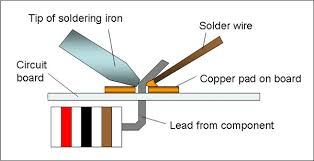

7 - Manufacturing Processes and Techniques
Table of Contents
1 Materials and processes used to make iterative models
7.1a Understand that 3D iterative models can be made from a range of materials and components to create block models and working prototypes to communicate and test ideas, moving parts and structural integrity
7.1b Demonstrate an understanding of simple processes that can be used to model ideas using hand tools and digital tools such as rapid prototyping, or digital simulation packages.
- Solidworks is an example of 3D software used to model working prototypes. This software can be used to digitally simulate models. Other software packages that can be used are Circuit Wizard.
2 Materials and processes used to make final prototypes
7.2a Understand how to select and safely use of common workshop tools, equipment and machinery to manipulate materials by methods of:
i. wasting/subtraction processes such as cutting, drilling, turning, milling.
- Cutting is the separation of a physical object, into two or more portions, through the application of an acutely directed force.
- Chip forming - sawing, drilling, milling, turning etc.
- Shearing - punching, stamping, scissoring.
- Abrading - grinding, lapping, polishing; water-jet.
- Heat - flame cutting, plasma cutting, laser cutting.
- Electrochemical - etching, electrical discharge machining (EDM).
Drilling is a cutting process that uses a drill bit to cut a hole of circular cross-section in solid materials. The drill bit is usually a rotary cutting tool, often multi-point. The bit is pressed against the work-piece and rotated at rates from hundreds to thousands of revolutions per minute.
Turning is a form of machining, a material removal process, which is used to create rotational parts by cutting away unwanted material. The turning process requires a turning machine or lathe, workpiece, fixture, and cutting tool.
Milling is the most common form of machining, a material removal process, which can create a variety of features on a part by cutting away the unwanted material. The milling process requires a milling machine, workpiece, fixture, and cutter.
ii. addition processes such as soldering, brazing, welding, adhesives, fasteners.
Soldering is a process in which two or more metal items are joined together by melting and then flowing a filler metal into the joint—the filler metal having a relatively low melting point. Soldering is used to form a permanent connection between electronic components.

Brazing is a metal-joining process in which two or more metal items are joined together by melting and flowing a filler metal into the joint, the filler metal having a lower melting point than the adjoining metal.
There are many different types of welding.
Click on the links below to read more about the main types of welding:
Gas welding
Arc welding
MIG welding
Adhesives may be used interchangeably with glue, cement, mucilage, or paste, and is any substance applied to one surface, or both surfaces, of two separate items that binds them together and resists their separation.
To read up on different types of glues/adhesives, click on this link to go to www.technologystudent.com to read more on this.
A fastener is a hardware device that mechanically joins or affixes two or more objects together. In general, fasteners are used to create non-permanent joints; that is, joints that can be removed or dismantled without damaging the joining components.
iii. deforming and reforming processes such as bending, vacuum forming.
There are many different ways to bend different types of materials. Line bending is a common way of bending plastics. Click on this link to read more about line bending.
If you want to bend pipes or tubes, click on this link to read more about it.
Vacuum forming is a simplified version of thermoforming, where a sheet of plastic is heated to a forming temperature, stretched onto a single-surface mold, and forced against the mold by a vacuum. This process can be used to form plastic into permanent objects such as turnpike signs and protective covers. Normally draft angles are present in the design of the mold (a recommended minimum of 3°) to ease removal of the formed plastic part from the mold.

7.2b Demonstrate an understanding of the role of computer-aided manufacture (CAM) and computer-aided engineering (CAE) to fabricate parts, such as:
i additive manufacturing (3D printing) to fabricate a usable part.
3D printing refers to processes in which material is joined or solidified under computer control to create a three-dimensional object, with material being added together (such as liquid molecules or powder grains being fused together). 3D printing is used in both rapid prototyping and additive manufacturing (AM). Objects can be of almost any shape or geometry and typically are produced using digital model data from a 3D model or another electronic data source such as an Additive Manufacturing File (AMF) file (usually in sequential layers). Stereolithography (STL) is one of the most common file types that is used for 3D printing. Thus, unlike material removed from a stock in the conventional machining process, 3D printing or AM builds a three-dimensional object from computer-aided design (CAD) model or AMF file, usually by successively adding material layer by layer.
ii subtractive CNC manufacturing such as laser/plasma cutting, milling, turning and routing.
To read more about the world of CNC machining, click on the links below.
Laser cutting
Plasma cutting
CNC milling
CNC turning
CNC router
7.2c Demonstrate an understanding of measuring instruments and techniques used to ensure that products are manufactured accurately or within tolerances as appropriate.
There are many instruments that can be used to measure sizes of products. The 2 most common ones you will use are the:
Steel rule
Vernier Caliper.
To read more about the vernier caliper, click on this link to go to www.technologystudent.com to read how to use the measuring instrument.
Other tools are available to measure products, such as a 'dial test indicator' or a 'micrometer'.
7.2d Understand how the available forms, costs and working properties of materials contribute to the decisions about suitability of materials when developing and manufacturing their own products.
In every decision about manufacturing a product, the cost of the overall product is very important to a manufacturer as this will determine profits. When deciding on the materials to be used in a product, there are many decisions that will need to be made. First you would need to find as many suitable materials as possible, considering as many possibilities as you can, such as, corrosion resistance or longevity.
Once you have selected suitable materials for your product, you will then need to consider cost, practicalities, such as manufacturing processes. This will need to be completed before deciding on the end material.
3 Materials and processes used to make commercial products
7.3a Demonstrate an understanding of the industrial processes and machinery used for manufacturing component parts in various materials, including:
i. polymer moulding methods, such as injection moulding, blow moulding, compression moulding and thermoforming.
Injection moulding is a manufacturing process for producing parts by injecting molten material into a mould. Injection moulding can be performed with a host of materials mainly including metals, (for which the process is called die-casting), glasses, elastomers, confections, and most commonly thermoplastic and thermosetting polymers. Material for the part is fed into a heated barrel, mixed (Using a helical shaped screw), and injected (Forced) into a mould cavity, where it cools and hardens to the configuration of the cavity. After a product is designed, usually by an industrial designer or an engineer, moulds are made by a mould-maker (or toolmaker) from metal, usually either steel or aluminium, and precision-machined to form the features of the desired part. Injection moulding is widely used for manufacturing a variety of parts, from the smallest components to entire body panels of cars. Advances in 3D printing technology, using photopolymers which do not melt during the injection moulding of some lower temperature thermoplastics, can be used for some simple injection moulds.

Blow molding is a manufacturing process by which hollow plastic parts are formed: It is also used for forming glass bottles. In general, there are three main types of blow molding: extrusion blow molding, injection blow molding, and injection stretch blow molding. The blow molding process begins with melting down the plastic and forming it into a parison or in the case of injection and injection stretch blow moulding (ISB) a preform. The parison is a tube-like piece of plastic with a hole in one end through which compressed air can pass.

Compression Molding is a method of molding in which the moulding material, generally preheated, is first placed in an open, heated mould cavity. The mold is closed with a top force or plug member, pressure is applied to force the material into contact with all mold areas, while heat and pressure are maintained until the molding material has cured. The process employs thermosetting resins in a partially cured stage, either in the form of granules, putty-like masses, or preforms.
Thermoforming is a manufacturing process where a plastic sheet is heated to a pliable forming temperature, formed to a specific shape in a mold, and trimmed to create a usable product. The sheet, or "film" when referring to thinner gauges and certain material types, is heated in an oven to a high-enough temperature that permits it to be stretched into or onto a mold and cooled to a finished shape. Its simplified version is vacuum forming.
ii. metal casting methods such as sand casting and die casting.
Sand casting, also known as sand molded casting, is a metal casting process characterized by using sand as the mold material. The term "sand casting" can also refer to an object produced via the sand casting process. Sand castings are produced in specialized factories called foundries. Over 70% of all metal castings are produced via sand casting process.
Die casting is a metal casting '''process''' that is characterized by forcing molten metal under high pressure into a mold cavity. The mold cavity is created using two hardened tool steel dies which have been machined into shape and work similarly to an injection mold during the process. Most die castings are made from non-ferrous metals, specifically zinc, copper, aluminium, magnesium, lead, pewter and tin-based alloys. Depending on the type of metal being cast, a hot- or cold-chamber machine is used.
iii. sheet metal forming methods using equipment such as punches, rollers, shears and stamping machines.
Punching is a forming process that uses a punch press to force a tool, called a punch, through the workpiece to create a hole via shearing. Punching is applicable to a wide variety of materials that come in sheet form, including sheet metal, paper, vulcanized fibre and some forms of plastic sheet. The punch often passes through the work into a die. A scrap slug from the hole is deposited into the die in the process. Depending on the material being punched this slug may be recycled and reused or discarded.

Sheet metal rolling.
Shearing, also known as die cutting, is a process which cuts stock without the formation of chips or the use of burning or melting. Strictly speaking, if the cutting blades are straight the process is called shearing; if the cutting blades are curved then they are shearing-type operations.The most commonly sheared materials are in the form of sheet metal or plates, however rods can also be sheared.
Stamping (also known as pressing) is the process of placing flat sheet metal in either blank or coil form into a stamping press where a tool and die surface forms the metal into a net shape. Stamping includes a variety of sheet-metal forming manufacturing processes, such as punching using a machine press or stamping press, blanking, embossing, bending, flanging, and coining.
7.3b Demonstrate an understanding of the industrial methods used for assembling electronic products, such as:
i. surface mount technology (SMT): PCB assembly using solder stencils, pick-and-place machines and reflow soldering ovens.
Watch the video below, this is a homemade machine, but it shows clearly the process of picking and placing surface mount (SMT) compinents to a PCB.
Below is a video explaining what reflow soldering is. Below that video is one explaining how the relow soldering oven work. It is selling a product, if you skip to 1:20, you will see how it works.
ii. CNC manufacturing such as laser/plasma cutting, milling, turning and routing.
- Watch the videos below to see the above CNC machines in action.
- CNC plasma cutting (the same as laser cutting)
- CNC milling machine.
- CNC turning machine.
- CNC routing machine.
7.3c Demonstrate an understanding of the benefits and flexibility of using computer-controlled machinery.
i. Automated material handling systems.
Automated Materials Handling. Automated materials handling (AMH) refers to any automation that reduces or eliminates the need for humans to check-in, check-out, sort material, or to move totes and bins containing library material.
ii. Robot arms to stack, assemble, join and paint parts.
- Click here to watch a video of a robot being used to paint a car.
- Click here to watch a video of a robotic assembly line.
7.3d Understand the necessity for manufacturers to optimise the use of materials and production processes.
i. Economical cutting and costing.
ii. Working to a budget through efficient manufacture.
7.4a The methods used for manufacturing at different scales of production, including:
i. one-off, bespoke production.
Job production, sometimes called jobbing or one-off production, involves producing custom work, such as a one-off product for a specific customer or a small batch of work in quantities usually less than those of mass-market products.
ii. batch production.
Batch production is a technique used in manufacturing, in which the object in question is created stage by stage over a series of workstations, and different batches of products are made.
iii. mass production.
Mass production is the manufacture of large quantities of standardized products, frequently utilizing assembly line technology. Mass production refers to the process of creating large numbers of similar products efficiently.
iv. lean manufacturing and just-in-time (JIT) methods.
Lean manufacturing or lean production, often simply "lean", is a systematic method for waste minimization ("Muda") within a manufacturing system without sacrificing productivity. Lean also takes into account waste created through overburden ("Muri") and waste created through unevenness in work loads ("Mura"). Working from the perspective of the client who consumes a product or service, "value" is any action or process that a customer would be willing to pay for.
Just-in-time (JIT) manufacturing, also known as just-in-time production or the Toyota Production System (TPS), is a methodology aimed primarily at reducing flow times within production system as well as response times from suppliers and to customers. Its origin and development was in Japan, largely in the 1960s and 1970s and particularly at Toyota.
v. Fully automated manufacture.
Lights out (manufacturing) Lights out or lights-out manufacturing is a manufacturing methodology (or philosophy), rather than a specific process. Factories that run lights out are fully automated and require no human presence on-site.
Click here to read more about lights out manufacturing.
7.4b Understanding how ICT and digital technologies are changing modern manufacturing.
i. Customised manufacture systems
In the custom manufacturing system, each item is produced by a single craftsperson, who works solely by hand or with the help of a machine. … As a result, custom-manufactured products are of the highest quality but are also the most expensive products in the market.
ii. Rapid prototyping.
Rapid prototyping is a group of techniques used to quickly fabricate a scale model of a physical part or assembly using three-dimensional computer aided design (CAD) data. Construction of the part or assembly is usually done using 3D printing or "additive layer manufacturing" technology.
iii. Additive and digital manufacture methods.
Additive Manufacturing refers to a process by which digital 3D design data is used to build up a component in layers by depositing material. The term "3D printing" is increasingly used as a synonym for Additive Manufacturing. However, the latter is more accurate in that it describes a professional production technique which is clearly distinguished from conventional methods of material removal. Instead of milling a workpiece from solid block, for example, Additive Manufacturing builds up components layer by layer using materials which are available in fine powder form. A range of different metals, plastics and composite materials may be used.
iv. Stock control, monitoring logistics in industry.
Stock control, monitoring logistics is the fact or process of ensuring that appropriate amounts of stock are maintained by a business, so as to be able to meet customer demand without delay while keeping the costs associated with holding stock to a minimum.
7.5a Understading the process that needs to be undertaken to ensure products meet legal requirements and are high quality.
i. Quality control.
A system of maintaining standards in manufactured products by testing a sample of the output against the specification.
ii. Quality assurance.
The maintenance of a desired level of quality in a service or product, especially by means of attention to every stage of the process of delivery or production.
iii. 'Total Quality management' (TQM)
A system of management based on the principle that every member of staff must be committed to maintaining high standards of work in every aspect of a company's operations.
iv. European and British standards.
It comprises a set of questions and answers that summarizes the role of standards in the European Single Market. The information in this document has been prepared by BSI (British Standards Institution), which is appointed by the UK Government (HMG) to act as the UK National Standards Body (NSB).